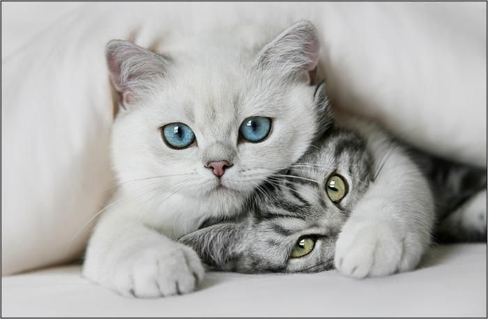

Завдання 2
"Интернет воспринимается современными людьми как источник информации. Не во всех случаях она отличается достоверностью, но уж скучной и неинтересной ее назвать точно нельзя. Привлечь внимание пользователей к требуемой площадке с помощью даже самого познавательного и информативного контента непросто – ставка делается на яркие и запоминающиеся картинки. Стороннему обывателю может показаться, что авторы снимков – волшебники и кудесники (многие из полученных изображений не тянут на статус «реалистичных»). Объясняется все просто: для получения изображений пользуются Фотошопом.
Интернет воспринимается современными людьми как источник информации. Не во всех случаях она отличается достоверностью, но уж скучной и неинтересной ее назвать точно нельзя. Привлечь внимание пользователей к требуемой площадке с помощью даже самого познавательного и информативного контента непросто – ставка делается на яркие и запоминающиеся картинки. Стороннему обывателю может показаться, что авторы снимков – волшебники и кудесники (многие из полученных изображений не тянут на статус «реалистичных»). Объясняется все просто: для получения изображений пользуются Фотошопом.
Интернет воспринимается современными людьми как источник информации. Не во всех случаях она отличается достоверностью, но уж скучной и неинтересной ее назвать точно нельзя. Привлечь внимание пользователей к требуемой площадке с помощью даже самого познавательного и информативного контента непросто – ставка делается на яркие и запоминающиеся картинки. Стороннему обывателю может показаться, что авторы снимков – волшебники и кудесники (многие из полученных изображений не тянут на статус «реалистичных»). Объясняется все просто: для получения изображений пользуются Фотошопом.